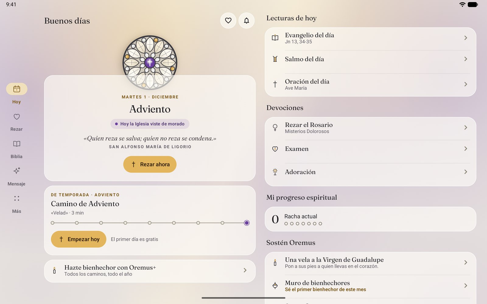
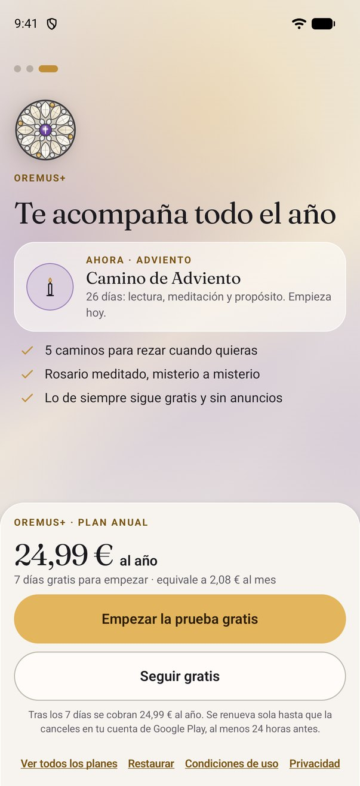
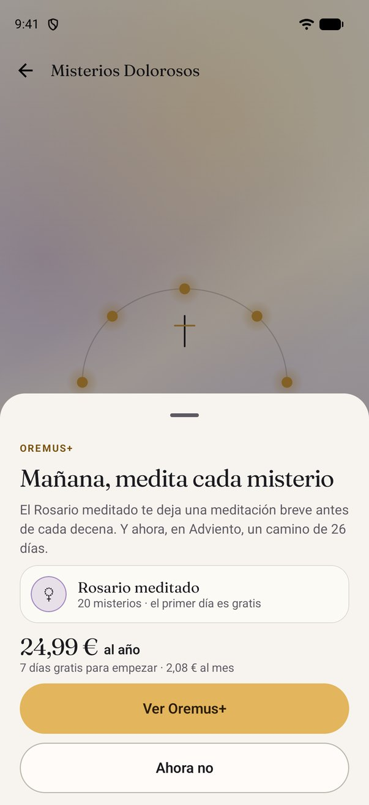
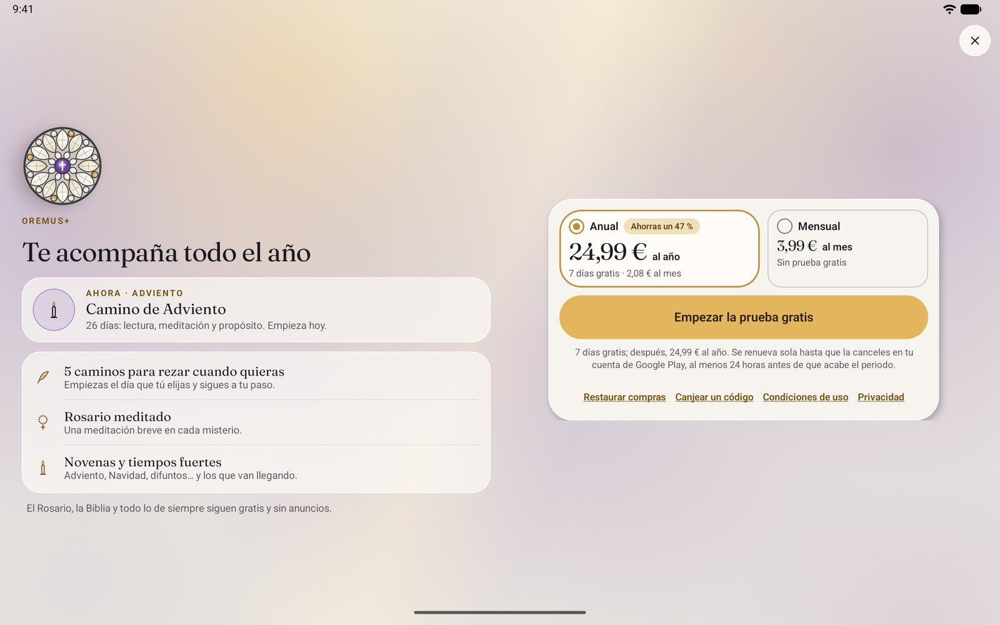

Qué es
Tu oración de hoy, sin buscarla
Al abrir Oremus ya está todo: el día y su tiempo litúrgico, el santo, una frase para la jornada, las lecturas y tu Rosario. Lo esencial funciona sin conexión.
- Santo Rosario guiado
- Biblia completa
- Liturgia del día
- Año litúrgico
- Caminos de oración
- Sin anuncios
- Sin conexión

Vídeo: Oremus en 30 segundosNovedades de la 2.2
Caminos para rezar todo el año
Oremus ya no se queda en el Adviento: ahora hay una biblioteca de caminos guiados que se empiezan el día que tú elijas.
- Biblioteca de caminos
Cuaresma, Adviento, Novena de Navidad, Novena por los difuntos y Rosario meditado, con el de cada tiempo destacado arriba. Los nuevos llegan sin actualizar la app.
- Camino de Cuaresma
Del Miércoles de Ceniza al Domingo de Resurrección: 47 días de lectura, meditación, oración y propósito, con el Vía Crucis de cada viernes.
- Rosario meditado
Los veinte misterios, uno cada día, con su Evangelio, una meditación breve y un propósito para rezar la decena con el corazón.
- Una bienvenida a tu medida
Dinos qué rezas y Hoy se ordena por ello. Elige la hora de tu aviso diario para no perder la racha.
- Más pantalla, más calma
En tableta, iPad y plegable, Hoy se abre en dos columnas: el día y tu camino a un lado, las lecturas y devociones al otro.
- Para leer a tu gusto
La letra crece con la de tu teléfono y el modo oscuro acompaña de noche, con más contraste en toda la app.
Caminos
Unos minutos al día, a tu paso
Cada día de un camino trae una lectura de la Biblia, una meditación, una oración y un propósito. Marcas el día como rezado, ves tu progreso y, si quieres, recibes un recordatorio a tu hora.
- El primer día de cada camino es gratis.
- Lo empiezas el día que tú elijas y sigues a tu paso.
- Sin conexión se reza el último que descargaste.
- Cuaresma y PascuaCamino de Cuaresma
Oración, ayuno y limosna para llegar a la Pascua con el corazón renovado.
47 días - AdvientoCamino de Adviento
Del primer domingo de Adviento a Nochebuena, con la corona que enciende una vela más cada domingo.
Hasta Nochebuena - 16 al 24 de diciembreNovena de Navidad
Nueve días para acompañar a María y a José en el camino hacia Belén.
9 días - Noviembre o cuando lo necesitesNovena por los difuntos
La esperanza de la resurrección y el consuelo en el duelo, por quienes nos han precedido.
9 días - Cualquier época del añoRosario meditado
Un misterio cada día con su Evangelio, una meditación y un propósito.
20 días
Las lecturas salen de las Biblias de la app, todas de dominio público. Las meditaciones son propias.
Oremus+
Te acompaña todo el año
El Rosario, la Biblia y todo lo de siempre siguen gratis y sin anuncios. Oremus+ abre todos los caminos, también los que vayan llegando.
- Todos los caminos para rezar cuando quieras, empezando el día que elijas.
- El Rosario meditado, misterio a misterio.
- Novenas y tiempos fuertes: Adviento, Navidad, Cuaresma, difuntos… y los que van llegando.
Precios en España con IVA; en otros países, el que marque cada tienda. La prueba de 7 días es del plan anual y solo para quien no la ha tenido antes: después se cobran 24,99 € al año. La suscripción se renueva sola hasta que la canceles en tu cuenta de Google Play o del App Store, al menos 24 horas antes de que acabe el periodo. Más en las condiciones de uso.
Las velas de la Capilla y las aportaciones de «Apoya Oremus» son voluntarias y aparte: no abren contenido. Si apoyas, puedes aparecer con tu nombre o un apodo en el Muro de bienhechores.
Capturas
Vidriera y vela, en cada pantalla
En el móvil


En la tableta y el iPad

Lo esencial, gratis
Todo lo de siempre, sin anuncios
Los 73 libros del canon católico en la versión de Torres Amat, con la Vulgata latina a un toque. Recuerda por dónde ibas y funciona sin conexión.
Paso a paso, con la cuenta de cada avemaría y lectura en voz alta si quieres. Las oraciones, también en latín.
Vía Crucis, examen de conciencia, adoración, Sagrado Corazón y más de 30 oraciones.
Templos de todo el mundo en lista o en el mapa, con foto, cómo llegar y el horario de misas cuando está publicado.
En la Capilla, una vela por tus difuntos o por una intención que arde treinta días. Es una compra voluntaria, como las aportaciones para sostener Oremus.
Sin registro. Si lo prefieres, entra con Google o Apple para guardar tu diario, tus favoritos y tu racha en la nube, y elimínala cuando quieras.
Oremus es una app independiente de oración. Textos bíblicos de dominio público: Torres Amat (español), Douay-Rheims (inglés), Martini (italiano) y la Vulgata. Datos de iglesias de OpenStreetMap y Wikidata; la mayoría de los templos no publica su horario.
Oremus: recemos
Gratis en Google Play y en el App Store.